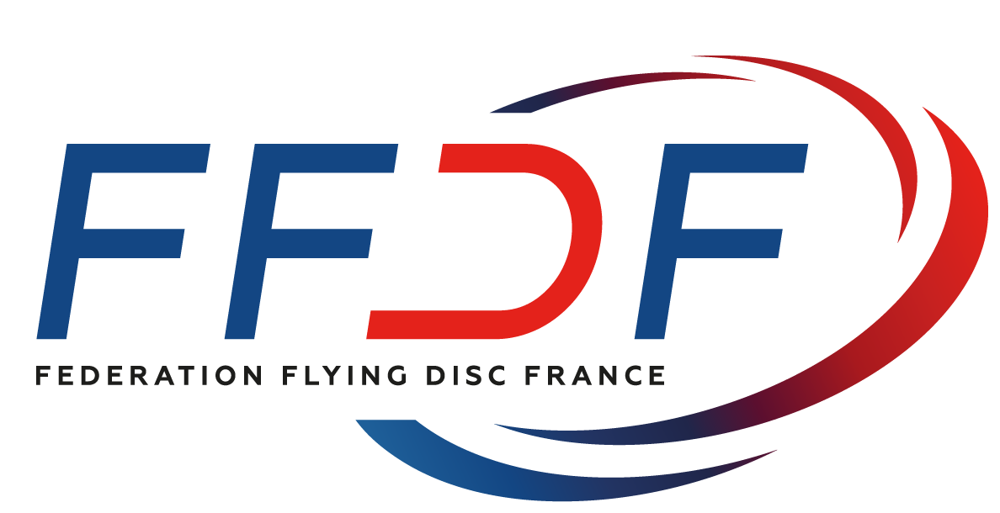
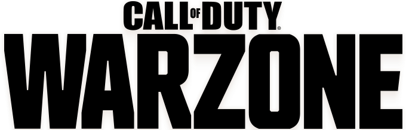
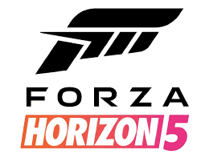
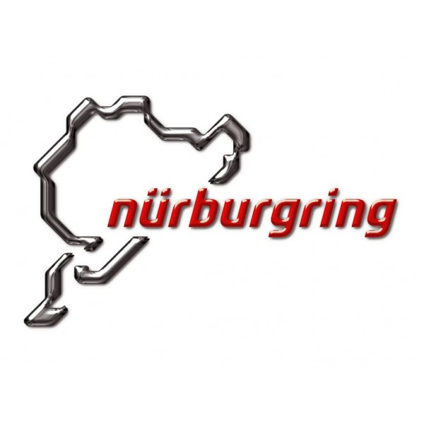

Mes centres d'intérêt
Sport
Durant mon temps libre, je fais de l'ultimate frisbee en club à Courtry.
Si vous n'êtes pas encore familier avec ce sport, vous pouvez découvrir
plus en détails sur son histoire et ses règles sur la page
Wikipédia de l'Ultimate.

Jeux vidéos
Je joue aussi régulièrement aux jeux vidéos.
Je joue principalement à des jeux multijoueurs comme peuvent l'être Fortnite ou
Warzone

mais mon côté passionné de voiture me fait aussi jouer à Forza Horizon 5.

Les sports automobiles
Comme dit juste au dessus, je suis aussi passionné de voitures.
- Je fais régulièrement du karting
- J'ai déjà conduit une voiture sur circuit grâce à l'entreprise Formula Kids
qui propose de conduire une voiture sur circuit pour les enfants
- Je suis allé sur le circuit du Nürburgring en Allemagne avec mon père l'année dernière.

Revenir à Ma présentation